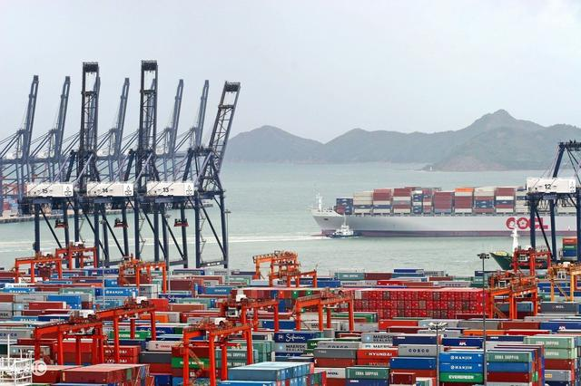
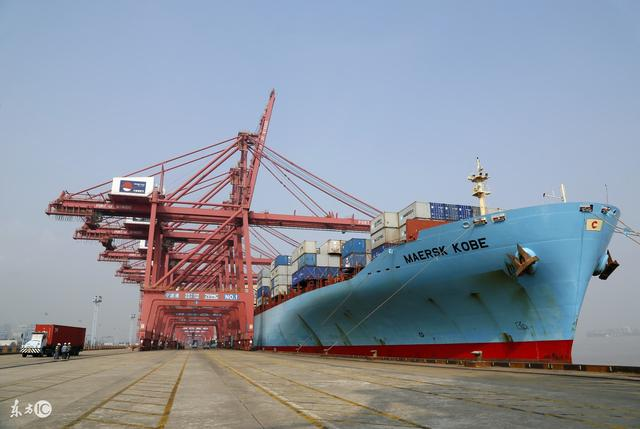
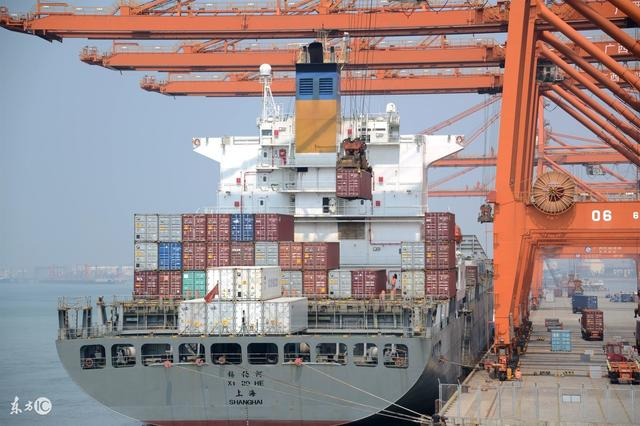
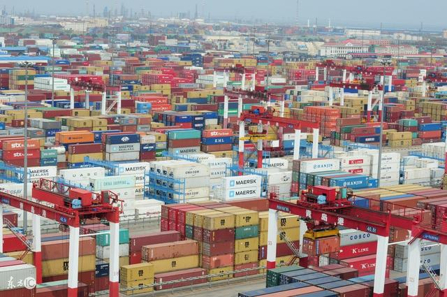
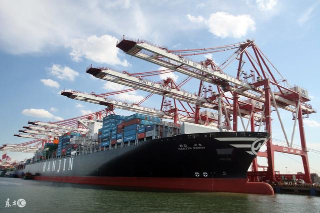
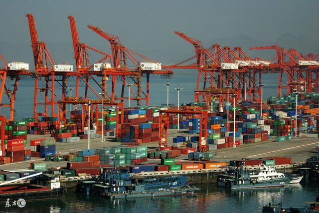
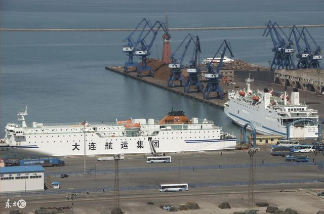
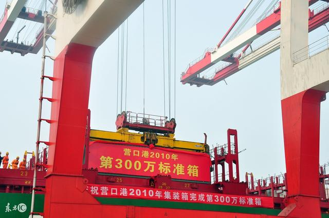
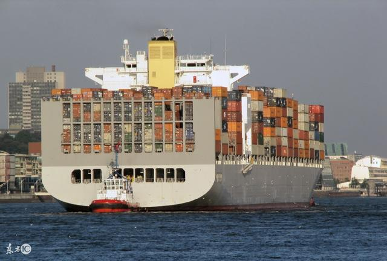

中國十大港口是那些?

旅遊攻略：旅遊，看風景，知世界，走進中國十大港口（按2016年貨櫃吞吐量排位）。
NO.1:上海港。2016年貨櫃吞吐量為3713萬TEU（標準貨櫃）

NO.2:深圳港。2016年貨櫃吞吐量為2422萬TEU（標準貨櫃）

NO.3:寧波舟山港。2016年貨櫃吞吐量為2157萬TEU（標準貨櫃）

NO.4:廣州港。2016年貨櫃吞吐量為1858萬TEU（標準貨櫃）

NO.5:青島港。2016年貨櫃吞吐量為1801萬TEU（標準貨櫃）

NO.6:天津港。2016年貨櫃吞吐量為1450萬TEU（標準貨櫃）

NO.7:廈門港。2016年貨櫃吞吐量為960萬TEU（標準貨櫃）

NO.8:大連港。2016年貨櫃吞吐量為959萬TEU（標準貨櫃）

NO.9;營口港。2016年貨櫃吞吐量為601萬TEU（標準貨櫃）
NO.10:連雲港。2016年貨櫃吞吐量為469萬TEU（標準貨櫃）

旅遊攻略：在全球十大貨櫃港排名中，中國占據其中七個席位，發展勢頭很迅猛。到各大城市港口看看繁忙的貨櫃碼頭，來來往往的巨型貨櫃船，一道特別的風景。